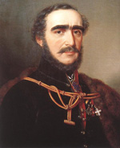
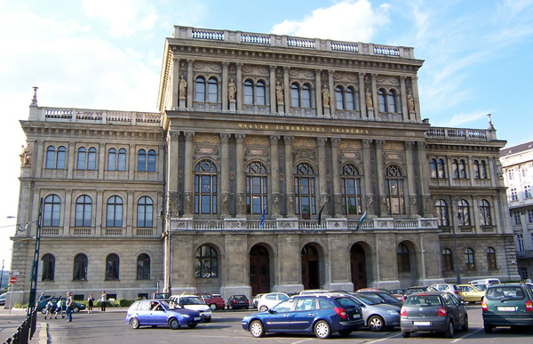

19. The Hungarian Academy of Sciences

The Hungarian Academy of Sciences was established in 1825, when Count István Széchenyi offered his annual income to this aim. The most important purpose of the Academy was to foster the Hungarian language but they also emphasized the study of sciences and arts in Hungarian. In addition they were working on the improvement of the Hungarian literature and theatrical art. They announced scholarships and laid the foundations of the national scientific book- and journalpublication. After 1849 the academic achievement was interrupted but from 1870 it became the scientific centre of Hungary. The members of the Academy were divided into three scientific parts: language and literature; philosophy, social and historical science and the natural sciences department.
This system was working until 1946. After this the Academy of Sciences was reorganised, e.g.: the number of members was decreased. At the end of the 1980s innovations began, in 1990 a new basic rule was accepted, and the Széchenyi Academy of Literature and Arts was established, which is an associated but independent institute. Among the former directors of the Academy we can find for example, Loránd Eötvös and Zoltán Kodály. László Lovász has been in charge of this position since 2014.
